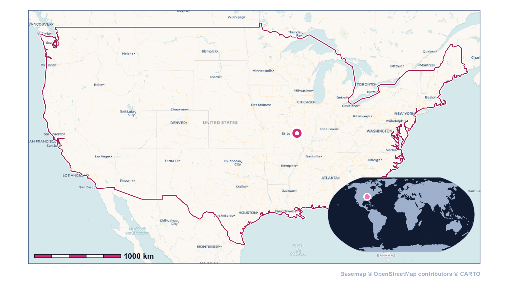
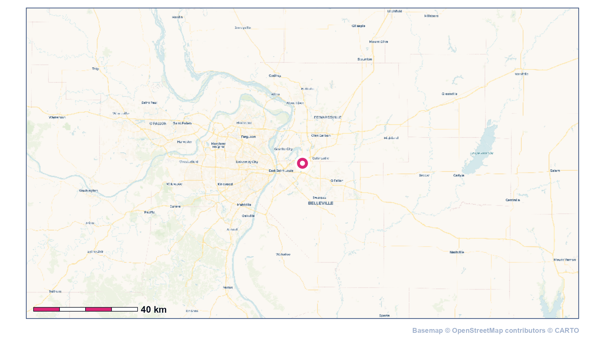
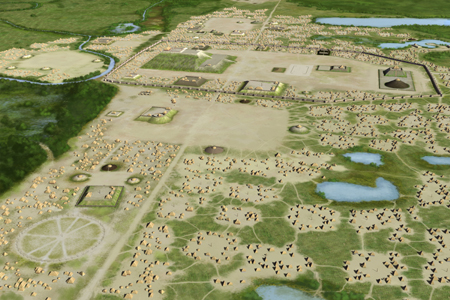
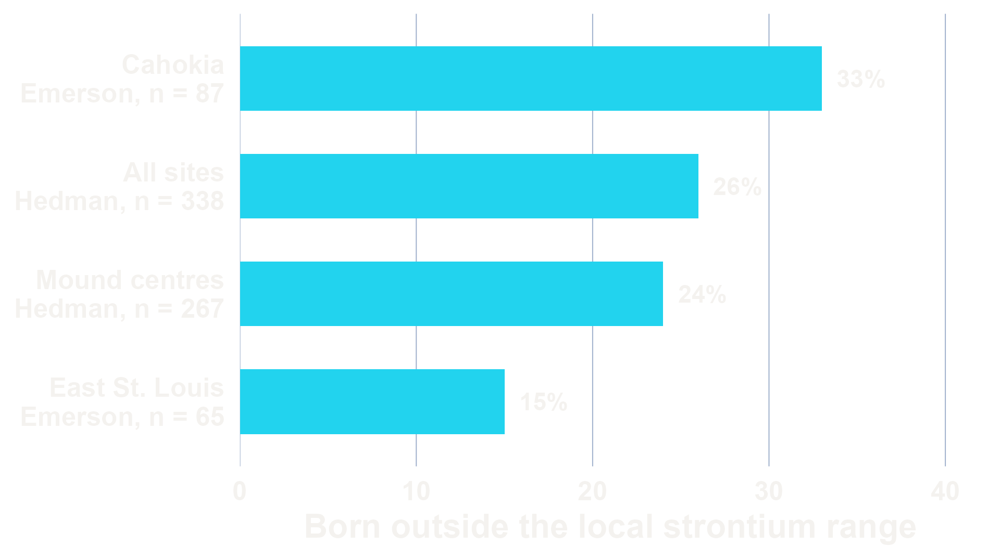
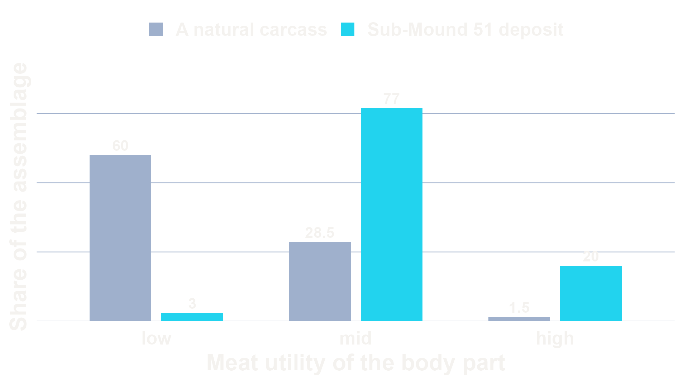
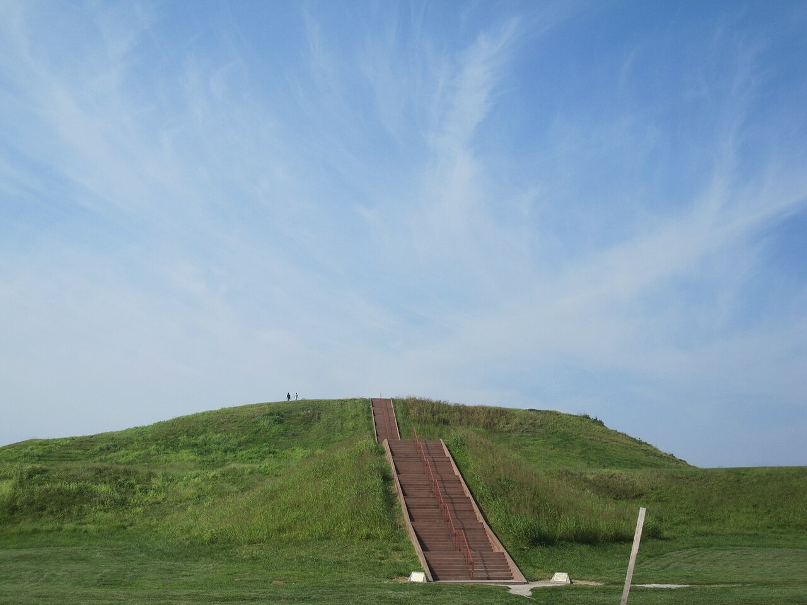
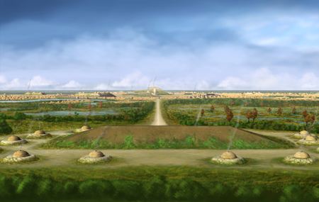
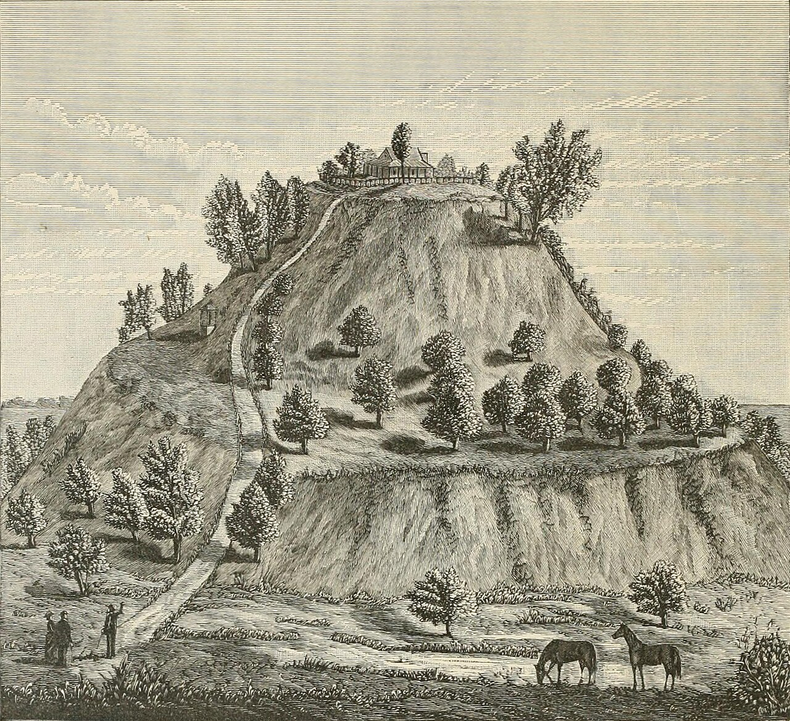
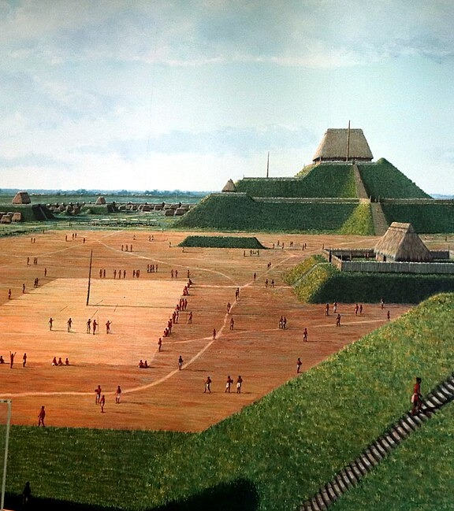

01
02
Previously on Mapping World Cities . . .
- Cities appear before states
- Resident foreign communities stabilized exchange
- Water shapes where cities are viable
03
Today on Mapping World Cities
- Maize arrived abruptly and the countryside emptied
- Three precincts were laid out together on a plan
- The city was assembled from strangers
04
Overlooking the confluence

Basemap © OpenStreetMap contributors © CARTO.
05
Overlooking the confluence

Basemap © OpenStreetMap contributors © CARTO.
Before the city
07
When maize arrives

Bone-collagen carbon isotope means, n on each point (Emerson et al., 2020).
Bone-collagen carbon isotopes: maize is a C₄ plant and almost every native plant in the region is C₃, so a maize eater's bone collagen carries a distinctly heavier carbon signature. Emerson and colleagues read 108 human skeletons this way, plus 15 dogs, whose scraps track the same shift (Emerson et al., 2020).
08
The countryside was vacated (Pauketat et al., 2023)
- 114 habitation sites on 674 hectares (about 15 times the area of Lafayette's main campus) before AD 1050
- Only 20 to 30 of the 114 sites persisted afterwards
- About 70 farmers per square kilometre, under 500 people
The Big Bang, AD 1050
10
Three precincts, one plan (Pauketat et al., 2023)
- Cahokia, East St. Louis and St. Louis laid out c. AD 1050
- Population up five- to tenfold within a generation
- About 20,000 people by the end of the eleventh century

Cahokia Mounds. Herb Roe, Wikimedia Commons, CC BY-SA 4.0.
11
Assembled from strangers

Two studies of different samples, not competing estimates of one quantity (Hedman et al., 2018; Emerson, 2017).
12
Caddo potters at East St. Louis (Lambert & Ford, 2023)
- 34 Caddo-style fine ware vessels from the East St. Louis precinct
- Local clay, homeland design grammar, over two centuries
- Wall thickness matches homeland beakers exactly
13
A managed deer herd

Sub-Mound 51 meat-utility profile against a natural carcass (Boles, 2019).
14
Monks Mound
- 30 m high, 6.5 ha footprint (about 9.1 football pitches), at least seven building stages (Pauketat et al., 2023)
- Near-final form within about fifty years (Tainter, 2019)

Monks Mound, Cahokia. Wikimedia Commons.
The city at its height
16
Built into water on purpose (Baires, 2015)
- Rattlesnake Causeway: 1 km long, 18 m wide, sighted at 355°
- 355° mirrors the lunar standstill azimuth of 130°
- 19% of the floodplain is swamp and lake

The Rattlesnake Causeway, Cahokia. Herb Roe, Wikimedia Commons, CC BY-SA 4.0.
17
A plaza that was a wetland
- North Plaza: 12 of 24 soil samples classify as wetland, 9 as seasonal (Rankin, 2022)
- Mudcracks under two North Plaza mounds show seasonal drying (Rankin, 2022)
- North Plaza construction may have been timed to the dry windows (Rankin, 2022)
- Constructing the Grand Plaza probably took about 30,000 person-days (Pauketat et al., 2023)
18
Intervisibility (Vilbig et al., 2026)
- 71% of habitation sites were visible from a mound group
- Against 44% of randomly placed control points
- 41% of the land area lay outside any viewshed
Intervisibility: two places are intervisible when each can be seen from the other. Here, whether a mound group and a habitation site were in one another's line of sight.
19
Sixty-one thousand shell beads (Kozuch, 2023)
- 61,148 marine shell beads across Greater Cahokia
- Mound 72 alone holds 48,908 of the beads
- One columella bead took up to six hours

Monks Mound, 1887 engraving. Wikimedia Commons.
20
A catastrophic flood, then 150 years (Baires, 2015)
- The AD 1200 flood laid 19 cm of silt on houses and fields
- The population stayed at least 150 years afterward
- Baires reads the decline as multidimensional
21
Core and region in the Stirling phase, AD 1100–1200 (Emerson, 2017)
- The Cahokia Precinct's population fell about 50%
- East St. Louis rose to roughly 7,700–11,000
- Upland settlement 25 km out: Grossmann's 113 structures, 4 council houses

The Grand Plaza, reconstructed. Prayitno, Wikimedia Commons, CC BY 2.0.
22
What to take away
- Maize arrived abruptly and the countryside emptied (Emerson et al., 2020)
- Three precincts were laid out together on a plan (Pauketat et al., 2023)
- The city was assembled from strangers, a quarter born elsewhere (Hedman et al., 2018)